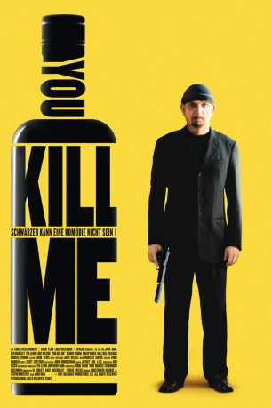

#3035 You Kill Me
 
 IMDB-Wertung: 6.5 / 10
IMDB-Wertung: 6.5 / 10  Metascore: 64
Metascore: 64 
Frank Falenczyk arbeitet in Buffalo als Killer für die polnische Mafia. Obwohl er seinen Job exzellent beherrscht, wenn er nüchtern ist, läßt die Qualität seiner Arbeit zunehmend nach, denn nüchtern ist er immer seltener: Frank ist Alkoholiker. Die Geschäfte der Polen laufen ebenfalls immer schlechter, sie werden durch Iren und Chinesen immer stärker unter Druck gesetzt. Als Frank im Suff einen wichtigen Auftrag in den Sand setzt und somit das Überleben der polnischen Mafia ernsthaft gefährdet, gibt ihm der Boss, sein Onkel Roman, eine letzte Chance. Frank muß nach San Francisco gehen und dort sein Problem in den Griff bekommen. Dort wird er von Dave beaufsichtigt, der Frank nicht nur zu den Anonymen Alkoholikern schickt, sondern ihm auch einen Job im Bestattungsinstitut verschafft. Als er auch noch die scharfzüngige Laurel kennenlernt, scheint sich alles zum Besten zu wenden. Wenn da nicht der Alkohol wäre ...
Jahr: 2007
Dauer: 92 Minuten
FSK: 16
Land: USA Studio: IFC FilmsTonspuren: DD5.1 - ,
Untertitel:
Auflösung: 1080p (1920x800) Größe: 8304 MB
Genre: Thriller, Komödie, Krimi, Liebe
Regisseur: John Dahl
Drehbuch: Christopher Markus, Stephen McFeely
Soundtrack: Marcelo Zarvos
Darsteller:
 Ben Kingsley als Frank Falenczyk
Ben Kingsley als Frank Falenczyk Téa Leoni als Laurel Pearson
Téa Leoni als Laurel Pearson Luke Wilson als Tom
Luke Wilson als Tom Dennis Farina als Edward O'Leary
Dennis Farina als Edward O'Leary Philip Baker Hall als Roman Krzeminski
Philip Baker Hall als Roman Krzeminski Bill Pullman als Dave
Bill Pullman als Dave Marcus Thomas als Stef Krzeminski
Marcus Thomas als Stef Krzeminski Scott Heindl als James Doyle
Scott Heindl als James Doyle Aron Tager als Walter Fitzgerald
Aron Tager als Walter Fitzgerald Jayne Eastwood als Kathleen Fitzgerald
Jayne Eastwood als Kathleen Fitzgerald Al Corley als Man in Park
Al Corley als Man in Park Aaron Hughes als Stanley
Aaron Hughes als Stanley- Micheline Marchildon als Emily
- Katie Messina als Becky
- Omar Alex Khan als Juan
 Will Woytowich als Nate
Will Woytowich als Nate- Sandy Jobin-Bevans als Supervisor Davis
- Brian Kawakami als San Francisco AA Member , uncredited
- Sean O'Brian als Real Estate Agent , uncredited
- Alison Sealy-Smith als Doris Rainford
- Erik Fjeldsted als Kevin
- Devin McCracken als Henry
- Lorraine James als Brenda
- Joanne Rodriguez als Janet
- David Gillies als Earl
- Susan Kelso als Laurel's Mother
- Darren Wall als Driver
- Lora Schroeder als Guard
- Ruth De Graves als Rosemary
- Tracy Beemer als Sales Clerk
- John Brown als Man in Airport , uncredited
- Cory Cassidy als Restaurant Patron , uncredited
- Warren Louis Wiltshire als AA Member , uncredited
Datei: X:\2007(N-Z)\You Kill Me (2007, FSK16, 1920x800).mkv seit 19.01.2016
Festplatte: HD 2007(A-Z)-2008(A-F)
 Es gibt insgesamt 56 Filme in der Gruppe '2007(N-Z)'
Es gibt insgesamt 56 Filme in der Gruppe '2007(N-Z)'